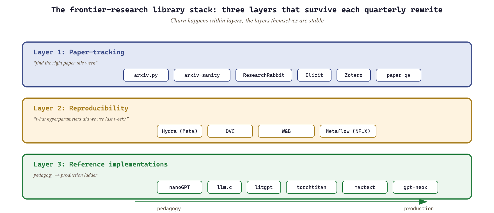

"Paper-tracking, prototyping, evaluation. Three layers of the frontier-LLM library stack, and the only ones that survive each quarterly rewrite."
Pip, Frontier-Library-Reader AI Agent
- Identify which 2026 Python libraries belong in the research stack versus the production stack.
- Pick a paper-tracking, reproducibility, and reference-implementation tool for a given workflow.
- Recognize when a "frontier" library is mature enough for production versus still experimental.
The frontier-research library ecosystem has consolidated around three layers: paper-tracking (arxiv.py, ResearchRabbit, Elicit), reproducibility (Hydra, DVC, W&B), and reference implementations (nanoGPT, llm.c, lit-gpt). Knowing which layer to consult for which question is the difference between a research workflow that ships and one that stalls.
Prerequisites
This section assumes the frontier-LLM platform shelf from Section 78.1 and the LLM-library landscape from Section 14.2.

78.2.1 Paper-tracking
- arxiv (Python) (Lukas Schwab, 2015) is the Python API client for arXiv that lets you scriptable search, fetch metadata, and download PDFs. Its objective is to make literature-tracking scriptable so you can build your own "papers I should read this week" pipeline, which matters when generic alerts are too noisy. Pick the arxiv library when scripting paper-tracking workflows.
- arxiv-sanity-lite (Karpathy, 2023) is the minimal personal arXiv tracker that lets you train your own TF-IDF / SVM classifier on liked papers. Its objective is to give you a personalized "papers most relevant to me" feed, which matters when generic curation does not match your interests. Pick arxiv-sanity-lite when ResearchRabbit feels heavy and you want a self-hostable feed.
- Google Scholar (Google, 2004) with alerts is the longest-running academic search engine plus its email-alert feature. Its objective is broad academic search across more than arXiv (conferences, journals, theses), which matters for cross-venue coverage. Pick Google Scholar alerts for staying current on specific authors or topics; for deeper citation-graph analysis, Semantic Scholar is more focused.
- ResearchRabbit (ResearchRabbit, 2021) is the citation-graph exploration tool with a Spotify-like recommendation UX. Its objective is to make "papers similar to X" interactive and visual, which matters when starting a new-topic literature review. Pick ResearchRabbit for visual literature exploration.
- Elicit (Ought, 2020) is the AI-assisted literature review tool using LLMs to summarize, extract claims, and answer questions across hundreds of papers. Its objective is to compress a multi-day literature review into an afternoon, which matters when learning a new field fast. Pick Elicit for rapid cross-paper synthesis; verify claims by spot-checking the underlying papers.
- Zotero (CHNM, 2006) and Mendeley (Elsevier, 2008) are the classic citation managers, used to organize papers, generate bibliographies, and annotate PDFs. Their objective is to be the canonical "where do my papers live" library, which matters as long-term citation infrastructure. Pick Zotero for the open-source path (Mendeley is Elsevier-owned and increasingly restrictive); both integrate with LaTeX and Word.
- paper-qa (Future House, 2023) is the open-source RAG library specifically tuned for question-answering over scientific papers with citation grounding. Its objective is to answer scientific questions with paper-cited evidence rather than hallucination, which matters when accuracy and provenance both matter. Pick paper-qa as the canonical paper-RAG starting point in 2026.
78.2.2 Reproducibility libraries
- Hydra (Meta, 2019) is the hierarchical configuration framework that lets you compose YAML configs from multiple sources with command-line overrides. Its objective is to make experiment configuration declarative and reproducible, which matters when "what hyperparameters did we use last week" is otherwise unanswerable. The core concept is config composition (defaults + overrides + groups) plus structured config dataclasses. Pick Hydra for any non-trivial research experiment configuration.
- DVC (Iterative, 2017) is the data version control system, "git for data and models" with content-addressed storage. Its objective is to track which data and model artifacts produced which results, which matters because reproducibility breaks when data changes silently. The core concept is .dvc pointers in git plus a remote storage backend (S3, GCS, etc.) for actual bytes. Pick DVC when your research needs reproducible data pipelines; for pure experiment tracking, W&B is lighter.
- Weights & Biases (W&B, 2017) is the experiment tracking SaaS covered also in Section 19.1. Its objective in the research context is the same as in production: log everything, compare runs, share dashboards. Pick W&B for research-team experiment tracking.
- Metaflow (Netflix, 2019) is the research-pipeline framework that wraps Python functions into versioned, runnable workflows with built-in cloud scaling. Its objective is to make research pipelines productionizable, which matters when "this notebook should be a daily job" requires too much rewriting. The core concept is the FlowSpec class with @step methods that can run locally or on AWS Batch. Pick Metaflow when your research workflow needs to graduate to scheduled production execution.
78.2.3 Reference implementations
The 2025-26 frontier-research library shelf bifurcates clearly into pedagogy and production. Pedagogy stays on nanoGPT and litgpt for clarity. Production-scale pretraining moved to torchtitan (Meta, 2024), the modular PyTorch pretraining library, and maxtext (Google JAX) for TPU-friendly pretraining. transformers v5 (2025-Q1) is the modern production reference SDK; if your code still uses v4 idioms it is at least one major version stale. The historical name lit-gpt is now litgpt on PyPI (rename).
- nanoGPT: minimal pretraining reference (pedagogy).
- llm.c: GPU pretraining in pure C/CUDA (pedagogy).
- litgpt: cleaner from-scratch GPT (pedagogy).
- torchtitan (Meta, 2024): modular PyTorch pretraining at production scale.
- maxtext (Google JAX): TPU-friendly pretraining.
- EleutherAI/gpt-neox: large-scale pretraining reference (production-shaped, GPU).
The right learning sequence is nanoGPT (understand the algorithm) → lit-gpt (understand the code) → gpt-neox or Megatron-LM (understand production scale). Skipping ahead to gpt-neox without nanoGPT first means you do not know what the wrappers are wrapping. Most engineers who try this skip step three later, because they realize step three is mostly boilerplate around the kernels in step one.
- The frontier-research library ecosystem collapses to three persistent layers: paper-tracking, reproducibility, and reference implementations. Quarterly churn happens within layers, but the layers themselves are stable.
- For paper-tracking pick arxiv.py for scripting, ResearchRabbit for visual exploration, Elicit for fast cross-paper synthesis, and Zotero as the long-term canonical library.
- For reproducibility, the Hydra + DVC + W&B trio covers configuration, data versioning, and experiment tracking; add Metaflow only when research workflows need to graduate to scheduled production.
- For reference implementations, the pedagogy-to-production ladder is nanoGPT, then litgpt, then torchtitan or gpt-neox; skipping nanoGPT means you do not know what the production wrappers wrap.
- If a "frontier" library has not been touched in 18 months, treat it as a research artifact, not a production dependency.
What's Next?
In the next section, Section 78.3: Datasets & Benchmarks, we build on the material covered here.